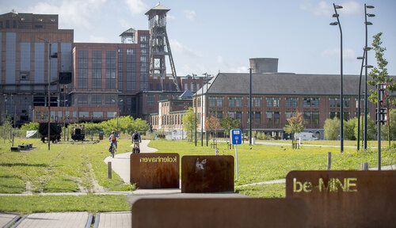
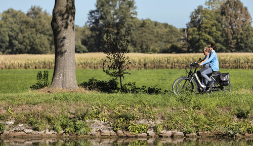
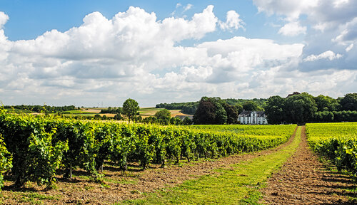
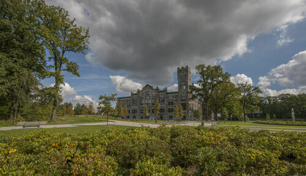
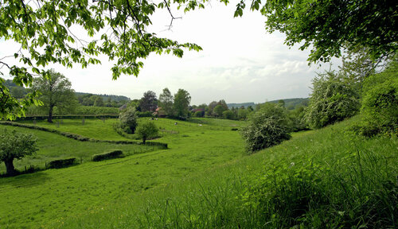
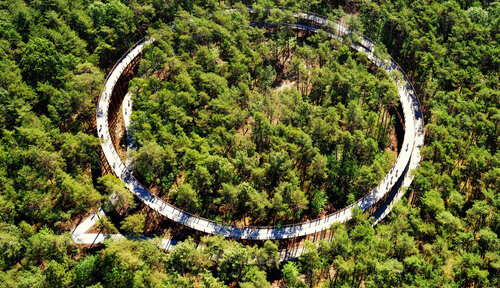

Van mijnschacht naar natuurpracht
61 kilometer
Een relatief vlakke fietslus die natuur en erfgoed combineert.
Brouwerijen en beekvalleien
41 kilometer
Een vlakke route in het noorden van Limburg. Dwars door bossen en uitgestrekte akkers en weilanden, langs landbouwbedrijven en het kanaal.
Land van druiven en mergel
55 kilometer
Een route met enkele matige tot steile hellingen door het intrigerende mergellandschap met zijn weidse panorama’s.
Het verleden en de toekomst
44 kilometer
Deze vlakke route serveert je een mix van erfgoed, vakmanschap, beleving en design.
Verrassend Voeren
39 kilometer
Deze fietsroute loodst je door het heuvelachtige, monumentrijke landschap van de Voerstreek.
Fietsen door de bomen
34 kilometer
Deze vlakke fietstocht doorheen het grootste aaneengesloten bosgebied van Vlaanderen, toont je het beste van Bosland.